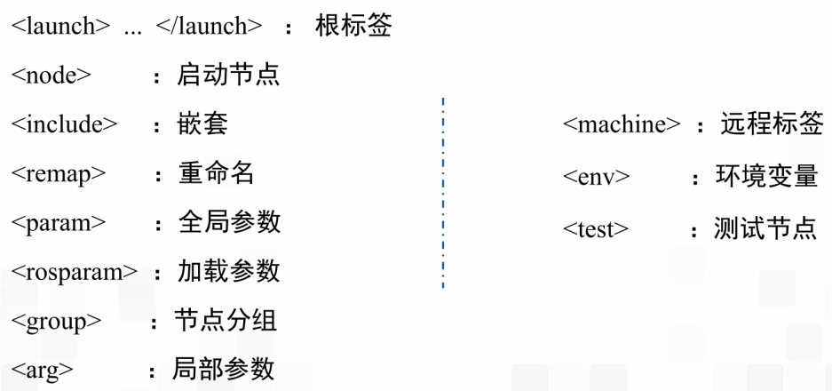
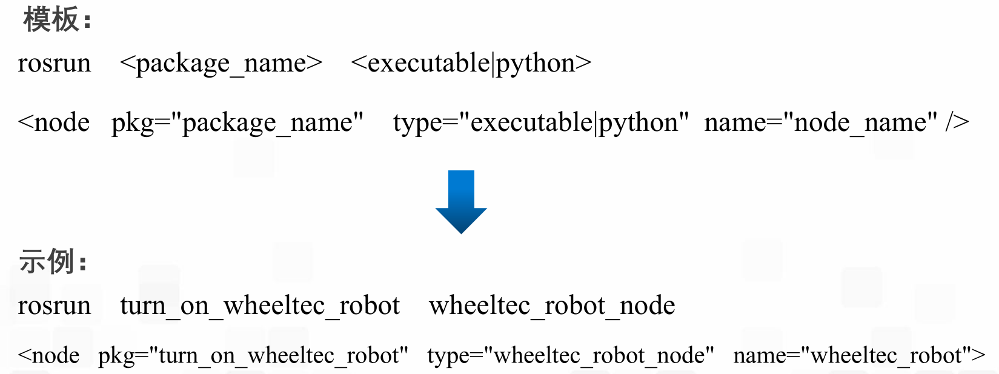
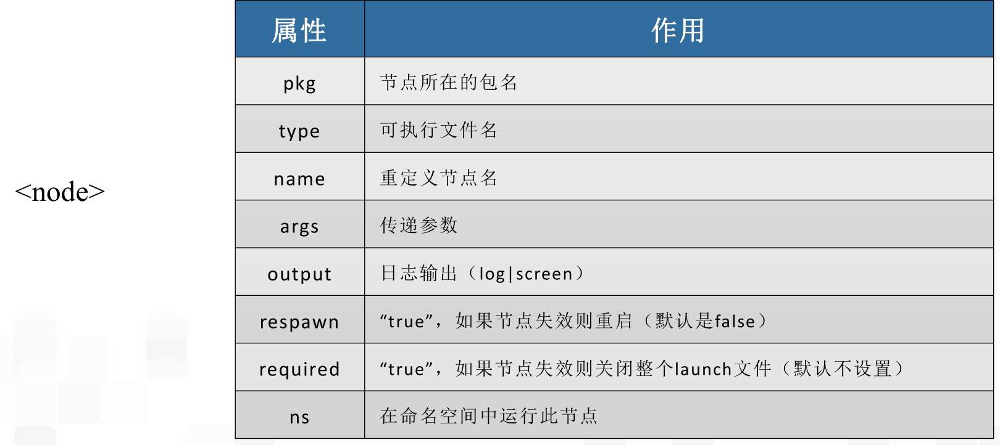
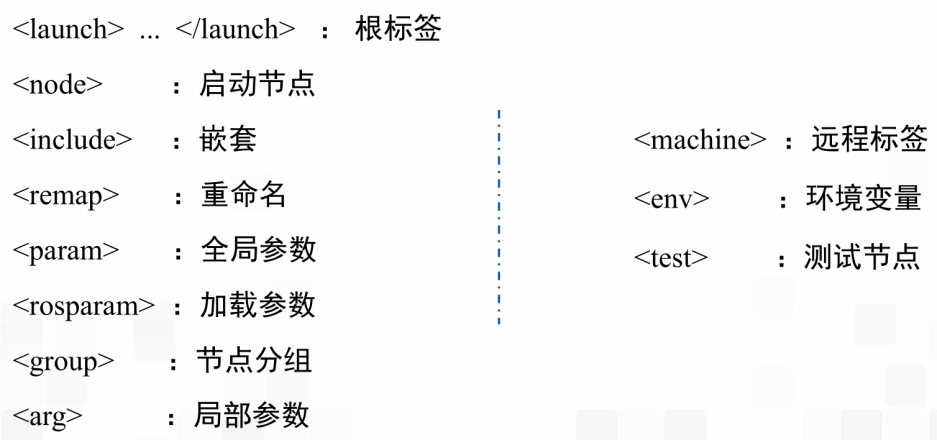
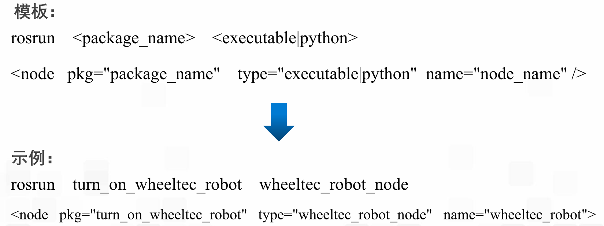
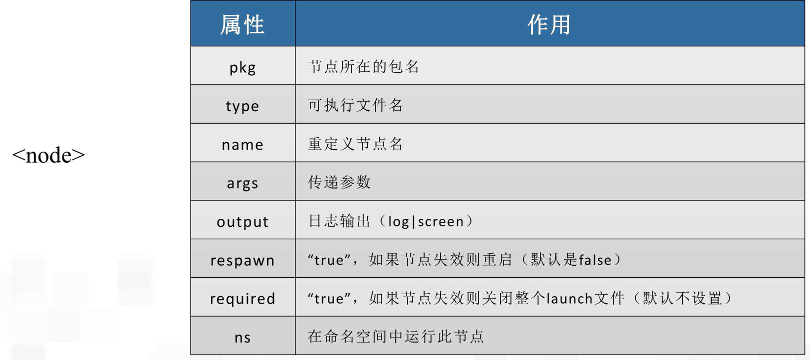

launch文件与参数服务器
一、launch文件
可以实现多节点启动和参数配置的xml文件
launch标签总览  根标签：launch文件的标签内容都需要包含在根标签下 嵌套：包含其他的launch文件，包含其他的xml文件 节点：   参数：区别
，在参数服务器中添加一个参数可以实现多节点启动和参数配置的xml文件
launch标签总览  根标签：launch文件的标签内容都需要包含在根标签下 嵌套：包含其他的launch文件，包含其他的xml文件 节点：   参数：区别
，在参数服务器中添加一个参数